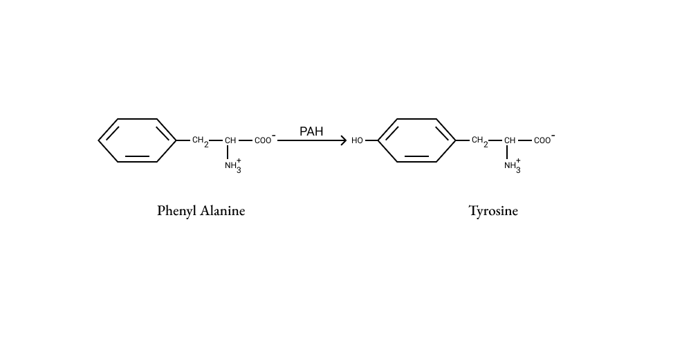
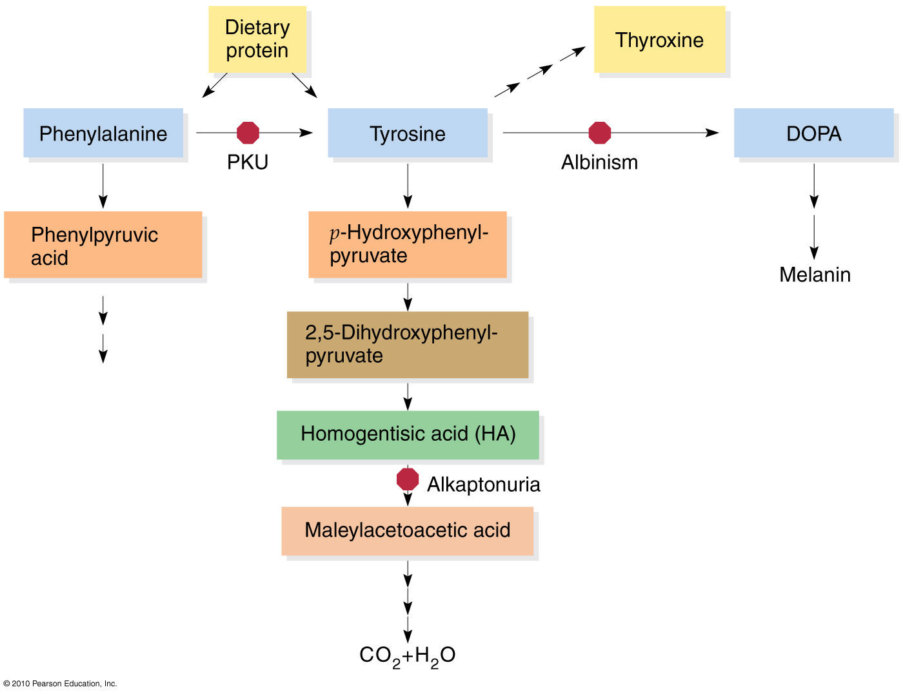

A Project by S Mayuri, MS183063
BTCZ, IIIrd year
Phenyl Ketonuria (a.k.a PKU) is an autosomal recessive genetic disorder characterized by the deficiency in the enzyme Phenyl Alanine Hydroxylase. The translation of the Enzyme—Phenyl Alanine Hydroxylase—is governed by the Phenyl Alanine Hydroxylase (abbr PAH) gene which is located on Chromosome Number 12. This mutation could cause more than 400 different types of diseases, Phenyl Ketonuria being one of them. In order to understand the disease better, we will have to look into the metabolism process with and without the PAH Gene.
Please click on one of the two buttons to explore the metabolism process involved with/without the PAH (Phenyl Alanine Hydroxylase) gene:
Metabolism with PAH Gene
Metabolism without PAH Gene
Metabolism with PAH Gene
Phenyl Ketonuria
Metabolism with PAH Enzyme is necessary to convert Phenyl Alanine to Tyrosine. Tyrosine is essential for the formation of Dopamine, Norepinephrine, Epinephrine and Thyroxine production.In the process of conversion it produces Fumaric acid and Acetoacetic acid which helps in the conversion of the tyrosine metabolite DOPA into the neurotransmitters epinephrine and norepinephrine. PAH is a three membered biopterin dependent aromatic acid hydroxylase. It uses Tetrahydrobiopterin which is cofactor necessary to activate the PAH which gets converted to Dihydrobiopterin by the enzyme Dihydrobiopterin Reductase which uses NADPH as hydrogen donor.Tyrosine is also responsible for the formation of melanine hence the absence of tyrosine could lead to Albinism and In addition , areas of brain that are usually pigmented (Eg:The substantial Nigra), also lacks the pigment. (T3).
Phenyl alanine hydroxylase reaction occurs mainly in liver and also it occurs in kidney. The reaction in the hepatocyte(liver cell) since it contains phenylalanine hydroxylase, Dihydrobiopterin reductase and Tetrahydrobiopterin which act as a coenzyme, which is generated in humans anew as gunosine triphosphate (a.k.a GTP) by a complex series of enzymatic reaction.
The hydroxylation reaction is airreversible reaction which undergoes coupled oxidation of phenylalanine to tyrosine and of Tetrahydrobiopterin to a quinonoid Dihydro derivative with molecular oxygen as the electron acceptor.The coenzyme Tetrahydrobiopterin is necessary for the further reactions hence it is regenerated by the reduction reduction of the quinonoid compound Dihydrobiopterin in the presence of NADPH by Dihydrobiopterin reductase and Carbinolamine dehydratase.
Metabolism without PAH Gene
Phenyl Ketonuria
Metabolism without PAH Enzyme leads to excessive accumulation of Phenyl Alanine which gets metabolized by different pathway one is Transamination and the other one is Decarboxylation, Incase of transamination phenyl Alanine is converted to Phenyl Pyruvate in presence Transaminase which then gets converted to Phenyl-lactate, O-hydroxyphenylacetate and Phenylacetate and In Decarboxylation it gets converted to Phenylethylamine and which in turn gets converted to Phenylacetylglutamate. Excessive phenylalanine in the blood brain barrier leads to decrease in the essential large neutral amino acids which is required for neurotransmitter synthesis, Hence it leads to mental retardation. Normal plasma level of phenylalanine = 1-2 mg/dl in case of PKU the level of phenylalanine in the blood = 20-65 mg/dl